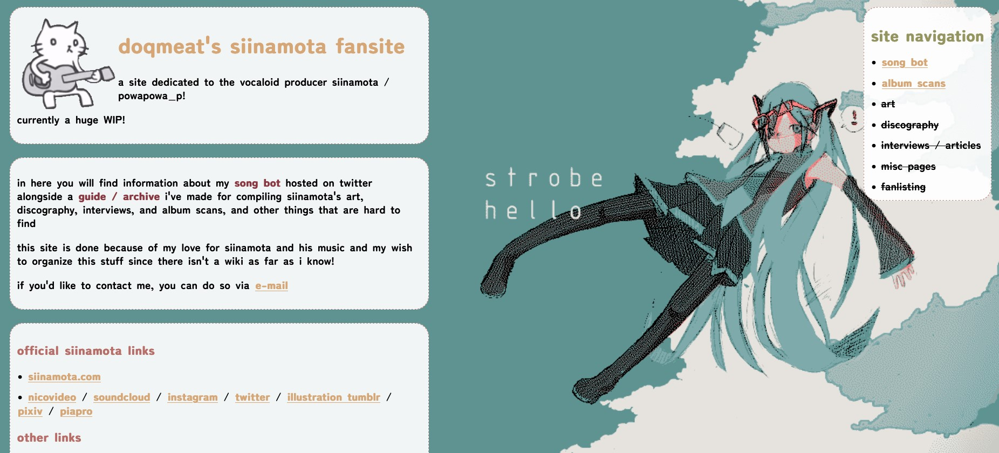

portable CD player26.may.24
whenever the power goes out i can always trust on my magnavox boombox and my CDs to helped me get through it without going insane. sadly though, said boombox has stopped reading my CDs since last year :( i've still been able to listen to my CDs on my DVD player. but the thing is that here in PR, power outages are not out of the ordinary on a regular day and it makes me want to rip my hair out every time it happens + hurricane season is getting close. because honestly, spending any amount of hours or days or weeks without any electricity is very rough. so as you can imagine i really needed a new battery powered CD player.
i kept looking online and in-stores for CD players to buy but they were pretty expensive, not all of them could run on batteries, and they were also ugly. i eventually started looking for portable CD players. i don't know why i wasn't doing it from the beginning. some of them looked really fancy and pretty but they were still past my $20 budget. i go into ebay to see if i could get my hands on a 2nd hand old CD player one and that's when i find this one.
.jpg)
a philips jogproof portable CD player. i honestly kinda fell in love with its design and it was only $18 usd! what a steal!  i am so happy with it!! i love how cute the design is. it is so clearly from the 2000's. it was manufactured in 2003 according to the back label. and the anti-skip mechanism it has really does work wonders. it is meant for you to carry it while doing exercise so it also has like a little hook on the back so you can attach it on your pants somewhere. i tried this while cleaning and it looks so charming just hanging from my front pocket.
i am so happy with it!! i love how cute the design is. it is so clearly from the 2000's. it was manufactured in 2003 according to the back label. and the anti-skip mechanism it has really does work wonders. it is meant for you to carry it while doing exercise so it also has like a little hook on the back so you can attach it on your pants somewhere. i tried this while cleaning and it looks so charming just hanging from my front pocket.
.jpeg)
it also has a 'program' button but i am not sure what it does or how to use it! it didn't come with a manual but i was able to find one online. i'll give it a read in a bit.
besides being powered with batteries, you can also use it with a 4.5v dc adapter! i feel like i might have one around here... but it is nice that i am also able to use it with that.
.jpg)
overall, i am super happy with it and it works like a charm!  i love physical media.
i love physical media.
calm
twin peaks S2
fallout: new vegas
ritz toasted chips, the sour cream and onion ones
free from uni20.may.24
last friday i finished the very last essay i had to turn in this past semester and now i am 100% FREE !!!!
right when i sent my essay, i opened my code editor and starting working on my plushies page! it's currently finished though i would love to add some more decorations to it! it was a very fun page to do and i love how colorful it turned out.
the past few days i've been cleaning my place like CRAZY since i have so much more time now. i find it a bit crazy how nowadays i actually like waking up in the morning! though i am pretty sure that part of that is because i love cooking myself breakfast... sometimes i be excited to wake up and start my day bc that means i get to eat my favorite meal of the day. breakfast. i think this is what life is truly about. it's also nice because it feels like i have more productive days + i can do more during the day.
when taking breaks from cleaning i'm either playing fallout or working on my siinamota fansite. i am a big fan of siinamota's work (for those who don't know: he is a vocaloid producer!) and i've been meaning to make a fansite for the past year or so! i like compiling info about his music, interviews, art, etc. + i needed a place to showcased my scanned albums so other people who enjoy his work can also check them out. ++ the lack of a dedicated wiki for him also inspired me to make this fansite!

screenshot of index as of 20.may.24
building it has been a quite challenging experience believe it or not since i want to implement some of the javascript stuff i've learned over the past couple of months. which ain't a lot but it is something! i managed to make a little window for the album scans page that you can toggle on n off but the hardest part was making each window disappear when pressing another album. i spent HOURSSS trying to figure it out. turns out i had to use a little special code that looks like this:
i am quite honestly still trying to wrap my head around what this is... but at some point i will get it. just not today. nonetheless i think i've done a lot of progress when it comes to javascript! i am Kind Of getting it tbh. and i want to put that to use for this fansite!
i also wanna set up a fanlisting as well at some point but that will have to wait a good while for now. i wanna have the site pretty completed when i get around to doing that! i have a ton of cool ideas for it but i need to take it slow so i don't burn out + so i can enjoy doing other things during my summer break!
hope you are all taking care!
sleepy
fallout
end of 1st uni semester04.may.24
my first uni semester is coming to an end this coming week! it is crazy how fast everything went. not sure if it's because i am doing something with my time or if... time is just like that now. i have learned a lot throughout this semester about myself and other things. there's a lot of stuff i need to work on! despite pushing myself to be less shy in classes, i really want to talk more in the future. i'll get there one day hopefully.
so far, i really enjoy going to uni. i'm still pretty introverted but i managed to make 2 friends this semester ^_^ we sometimes go and study at an ice cream place near the train, and i went to the mall with my other friend and we also got some ice cream there. the 2 people i've befriended love ice cream. it's very nice. i often tell myself that i like being alone. part of that is true. i love being by myself. it feels very refreshing and peaceful. but the immense happiness these new friendships have given me reminded me that i also like meeting new people and connecting with them. a reminder that i am still a social being to my core.
even if i'm not very social, i still find the atmosphere of the university very nice. i also enjoy taking the train almost on a daily basis. not having to drive and waste money on a weekly basis on gas has also given me immense joy in my life. i am being very serious. i lowkey hate driving. and not only that, but i find the train rides itself very relaxing. i've been walking way more because of this. which is great because i don't really have the energy to do some Actual exercise nowadays though i am pretty sure i could if i scheduled my time for it.
all in all, i had a very nice time here. on august i will be taking my first computer science. i'm super curious to take that class and see what they'll be teaching there. so i'm really looking forward to it! i am a little bit nervous  but i know i'll be okay at the end of the day.
but i know i'll be okay at the end of the day.
with this semester coming to an end i will be free once again to do more stuff in here! i have some blog posts that i've been meaning to publish for a while. though i would also love to keep working on building my siinamota fansite! i have so many fun ideas but we'll see! i also wanna continue playing fallout 1 and eventually start a new game in new vegas.
and that's not even all! i'll be visiting my beloved cat mizu this summer as well! it's been such a long time since i've seen him... i really can't wait to pet him and give him forehead kisses. i'll be so happy to see him.
okay :)
dungeon meshi
fallout
egg n bacon sandwich